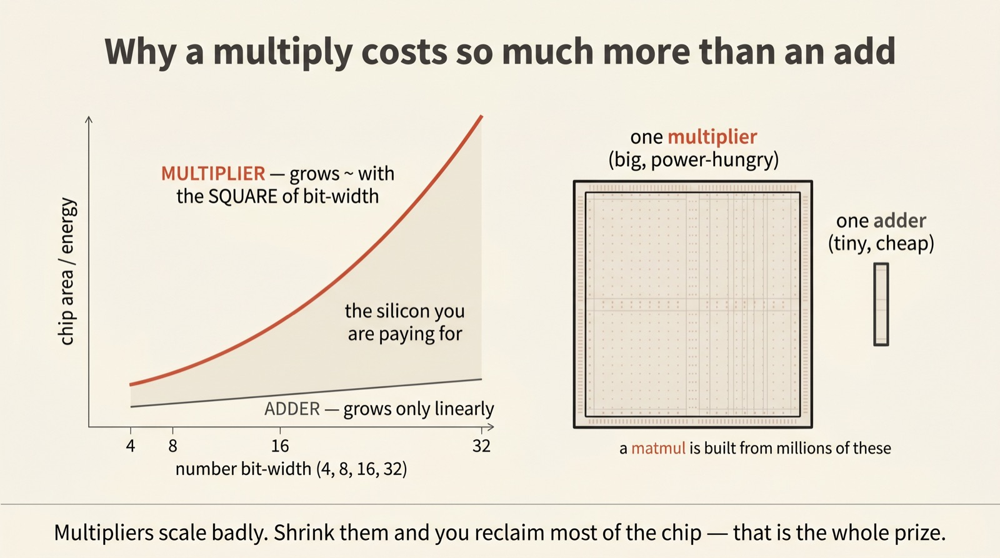
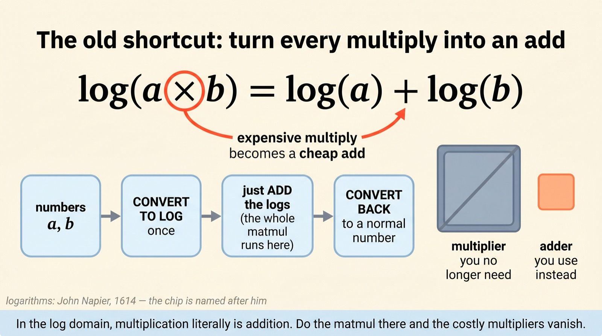
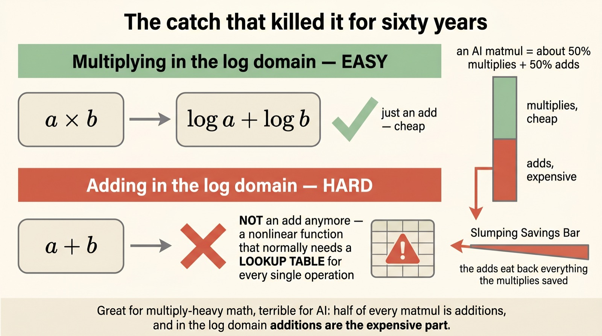
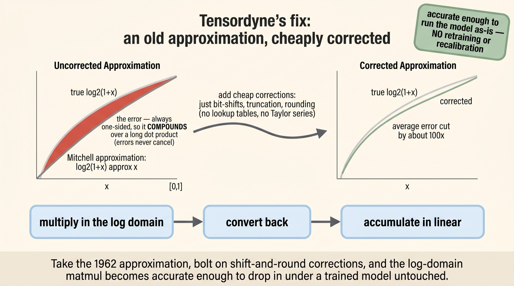
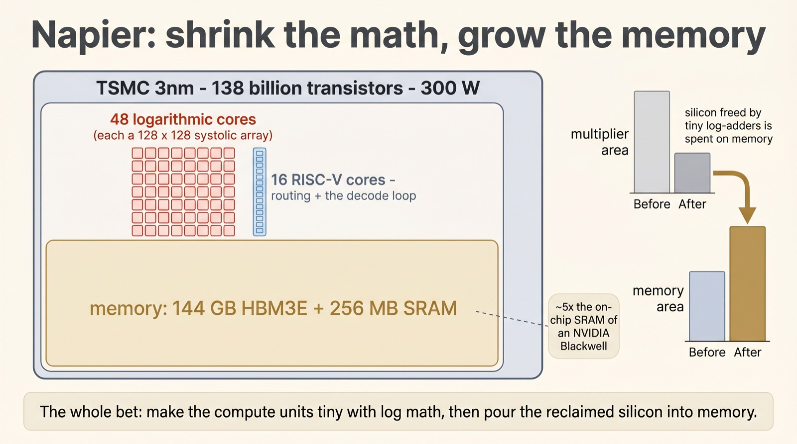
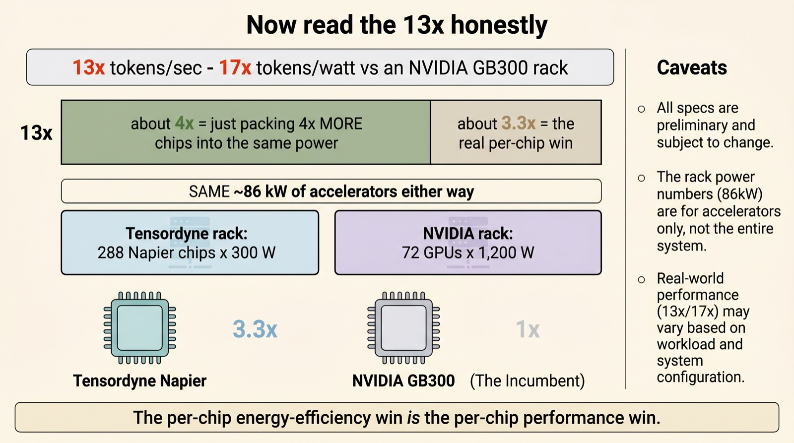

A chip that does its arithmetic in the log domain
Multiply by
adding
A multiplier is one of the most expensive things on a chip. So Tensordyne's new Napier processor dusts off a trick from 1962: store every number as a logarithm, and multiplication turns into addition. The multipliers shrink, the freed silicon becomes memory — and a 412-year-old idea takes a swing at Nvidia.
Everyone who tried log-domain arithmetic before gave up at the same wall: addition. Tensordyne (formerly Recogni, which first shipped this math in 7nm for self-driving cars) claims a cheap fix — and a 3nm datacenter chip that beats an Nvidia GB300 rack by 13× on tokens per second. We'll explain the idea, the catch, the fix, and then read that 13× honestly.
Scroll to begin.
↓
Why a multiply costs so much more than an add
Strip an AI accelerator down to what it actually does all day and you find one operation repeated trillions of times: multiply two numbers, add the result to a running total. That's a matrix multiply, and a matrix multiply is most of what a neural network is. So the economics of the whole chip come down to a deceptively small question — how much does it cost, in silicon and in power, to do one multiply and one add?
The two are not remotely equal. An adder is cheap: its size grows roughly in proportion to the number of bits it handles — double the bits, double the adder. A multiplier is a monster: its area grows closer to the square of the bit width, because under the hood it builds and sums a whole grid of partial products. Go from 8-bit to 16-bit numbers and the adder doubles, but the multiplier roughly quadruples.

Multiply that single tile by the millions packed into an accelerator and you see the prize clearly. If you could somehow do the matmul without the multipliers, you'd reclaim a huge fraction of the silicon and the power budget. That is exactly what Tensordyne is chasing — and the route there runs through a piece of seventeenth-century mathematics.
The old shortcut: multiply becomes add
In 1614, John Napier published the logarithm for one practical reason: to spare astronomers the agony of multiplying enormous numbers by hand. The logarithm has a magical property — it converts multiplication into addition. And the chip in this story is named, fittingly, Napier.
Read that slowly, because the entire bet rests on it. If you store your numbers as their logarithms, then to multiply two of them you simply add their logs. The expensive multiplier disappears; in its place sits a cheap adder. Convert your numbers to the log domain once, run the whole matrix multiply there as additions, and convert back at the end.

Engineers have known this since at least 1962, when a researcher named Mitchell showed how to do it directly on binary numbers. It is one of the most-attempted ideas in computer arithmetic. And for sixty years it kept failing at the same spot — for a reason that is almost poetic.
The catch that killed it for sixty years
Here is the cruel twist. Logarithms turn multiplication into addition — but they turn addition into something horrible. Once your numbers live in the log domain, you can no longer add them by adding. To compute a + b when you're holding log(a) and log(b), you need a nonlinear function that, in hardware, usually means a lookup table consulted on every single operation.
For some workloads that's fine — if your math is almost all multiplies, you rarely pay the addition tax. But remember what a matmul actually is: multiply and accumulate. It's a roughly 50/50 split of multiplies and adds. You make the multiplies nearly free, and then the additions — now the expensive operation — quietly eat back everything you saved.

This is why the idea was a graveyard. It looked brilliant on a slide and died in the addition. So the real question isn't "can you multiply by adding?" — that part is easy. It's: can you make the additions cheap again?
An old approximation, cheaply corrected
Tensordyne's answer starts with the oldest trick in the book — the Mitchell approximation. Converting to and from the log domain involves the curve log2(1 + x), and Mitchell's shortcut just replaces that gentle curve with a straight line: log2(1 + x) ≈ x. No table, no fuss. The problem is accuracy. The straight line always sits on the same side of the true curve, so the error is one-sided — and one-sided errors don't cancel. Strung across a long dot product, they pile up in the same direction until the answer drifts.
The fix is the clever part, and it's almost anticlimactic. Instead of an expensive correction — a Taylor series, a lookup table — Tensordyne bolts on cheap corrections: bit shifts, truncations, a little rounding. Operations a chip can do practically for free. Those nudges push the straight line back toward the true curve and cut the average error by roughly 100×.

The recipe that falls out is tidy: multiply in the log domain, convert back, and accumulate in plain linear arithmetic. The additions happen in normal numbers, where they're cheap, so the log-domain addition catastrophe never arrives. And because the conversion is accurate enough, you can run an already-trained model on this hardware as-is — no retraining, no recalibration. Tensordyne calls its particular flavor of this the "Pareto" number system.
Napier: shrink the math, grow the memory
So what do you build once your compute units are tiny? You spend the savings on the thing modern AI is actually starved for: memory. That's the shape of Napier. It's a TSMC 3nm chip with 138 billion transistors in a 300-watt envelope — but the logarithmic compute is deliberately small, and the memory is large.
The die carries 48 logarithmic cores, each a 128×128 systolic array of those cheap log-adders, alongside 16 RISC-V cores that handle routing and the decode loop. Because the math units are so compact, there's room for 144 GB of HBM3E and 256 MB of on-chip SRAM — about five times the SRAM of an Nvidia Blackwell. The whole philosophy is visible right there in the floorplan: less silicon for arithmetic, more for keeping data close.

This isn't Tensordyne's first attempt. As Recogni, the company already shipped this same arithmetic in a 7nm chip for self-driving cars, where every watt matters. Napier points the identical idea at the datacenter — and reframes it as a memory-rich inference machine rather than a flops monster. Which, as we're about to see, is exactly how to read its headline number.
Now read the 13× honestly
Tensordyne's banner claim is 13× the tokens per second and 17× the tokens per watt of an Nvidia GB300 rack. Eye-watering — and worth taking apart, because most of the story is in how you count.
Start with the racks. A Tensordyne TDN72 packs 288 Napier chips at 300W each; an Nvidia GB300 rack holds 72 GPUs at about 1,200W each. Multiply it out and both racks burn the same roughly 86 kilowatts of accelerators. So Tensordyne is fitting four times as many chips into the same power envelope. That alone accounts for about 4× of the 13× — it's packing, not magic. The genuine per-chip advantage is closer to 3.3×.
And where does even that 3.3× come from? Not from raw compute — the rack actually has fewer FP4 flops than a GB300. It comes from the extra memory, plus a latency-bound operating point: the regime where you're serving a few users at very low latency, GPUs sit half-idle waiting on memory, and a memory-heavy chip pulls ahead. Tensordyne quotes 1,300 tokens per second per user on a two-trillion-parameter mixture-of-experts model — a latency figure, not a throughput crown.

So — is it real?
Two things can be true at once. The core idea is real and genuinely elegant: log-domain multiplication is decades old, the addition problem is the reason it never stuck, and cheap shift-and-round corrections that dodge the lookup table — accurately enough to skip retraining — are a legitimately clever way through. That part deserves the attention it's getting.
The rest calls for patience. Every number so far is simulation; Napier has only just taped out, and silicon has a long history of humbling simulations. Systems aren't due until 2027, by which point the chip to beat won't be today's Blackwell but Nvidia's next architecture, Rubin. The advantage, read honestly, is narrower than 13× — more memory and clever packing aimed at a specific low-latency serving regime, not a wholesale compute miracle.
But the underlying lesson outlasts any single chip. For a decade, AI hardware progress meant chasing more and faster multipliers. Tensordyne is betting on the opposite move — make the multiplier almost disappear and pour the reclaimed silicon into memory. Whether or not Napier wins, that's the more interesting question for the next generation of chips: not how fast can you multiply, but whether you need to multiply at all.